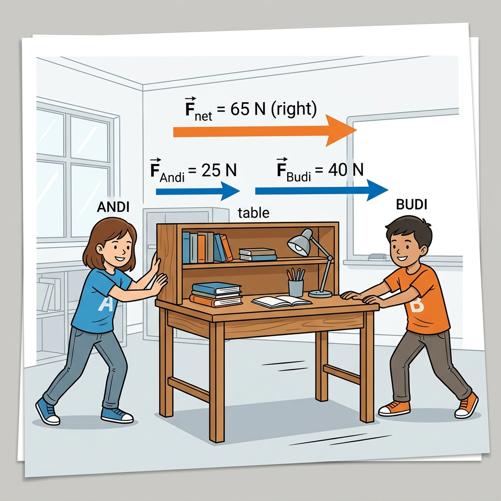
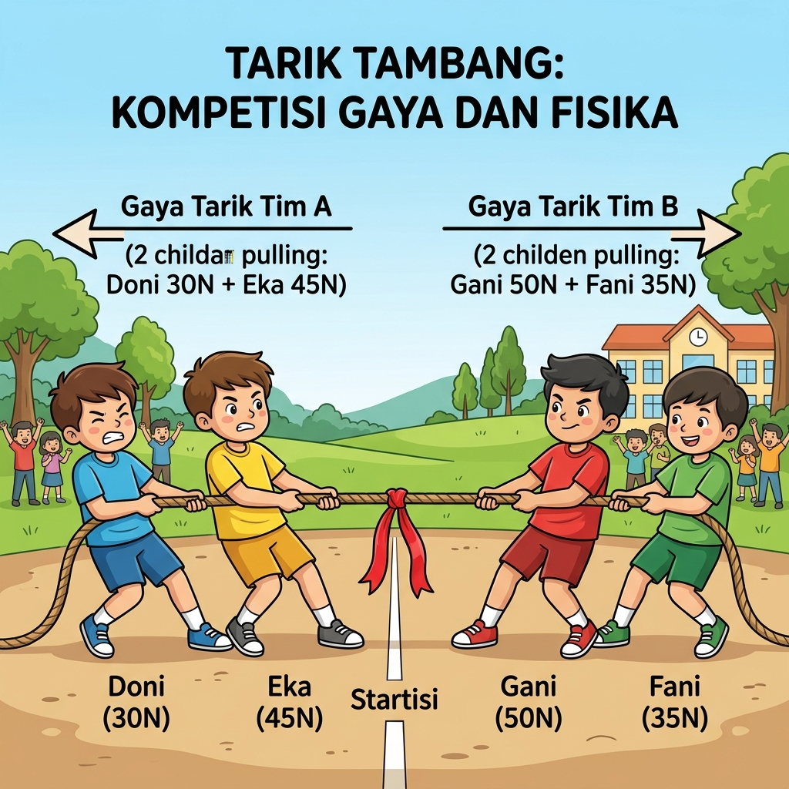
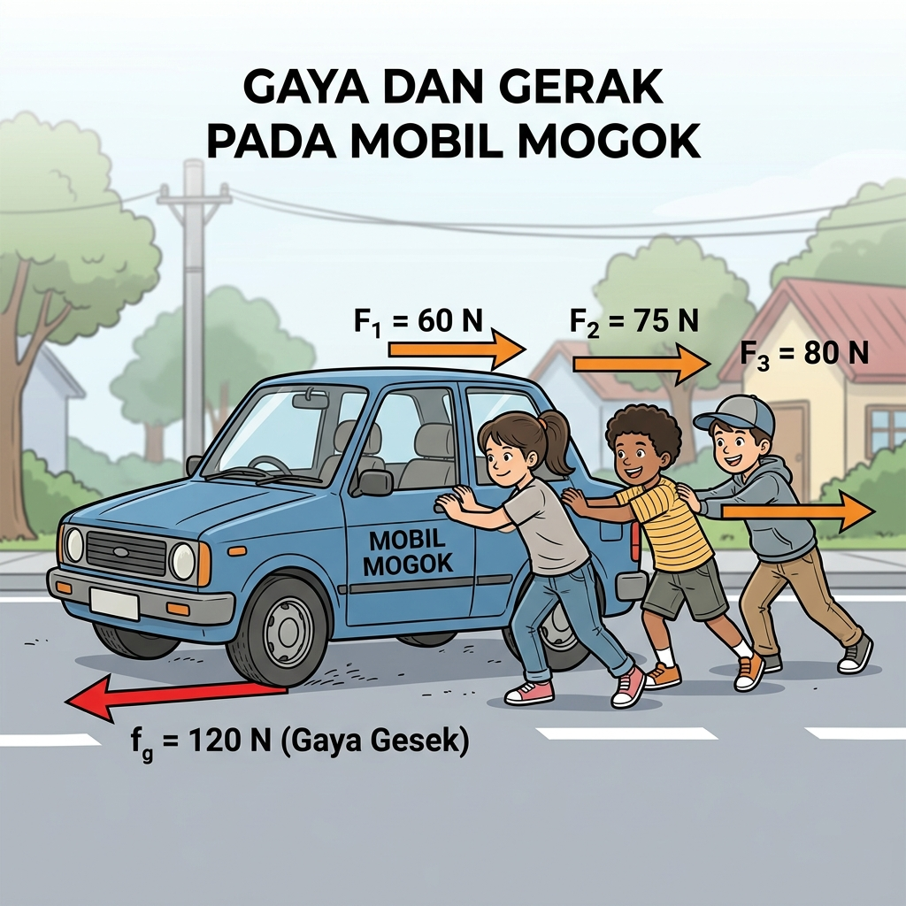

Tujuan: Peserta didik dapat menganalisis, menggambar model, dan menghitung resultan gaya melalui diskusi kelompok.
Andi mendorong meja ke kanan dengan gaya 25 N. Budi membantu mendorong ke arah yang sama dengan gaya 40 N.

Tugas:
a. Gambarkan model vektor gayanya (gunakan skala yang sesuai):
b. Hitung besar resultan gayanya:
Dua tim sedang bertanding tarik tambang. Tim A terdiri dari Doni (30N) dan Eka (45N) menarik ke kiri. Tim B terdiri dari Gani (50N) dan Fani (35N) menarik ke kanan.

Tugas:
a. Analisis tim mana yang akan menang? Jelaskan alasannya melalui diskusi.
b. Hitung besar dan arah resultan gayanya:
Tiga orang mencoba mendorong mobil mogok ke kanan dengan gaya masing-masing 60 N, 75 N, dan 80 N. Namun, ban mobil mengalami gaya gesek dengan lantai sebesar 120 N ke arah kiri.

Tugas:
a. Gambarkan model vektor dari semua gaya yang bekerja pada mobil:
b. Hitung apakah mobil tersebut akhirnya bisa bergerak? Jika ya, ke arah mana?